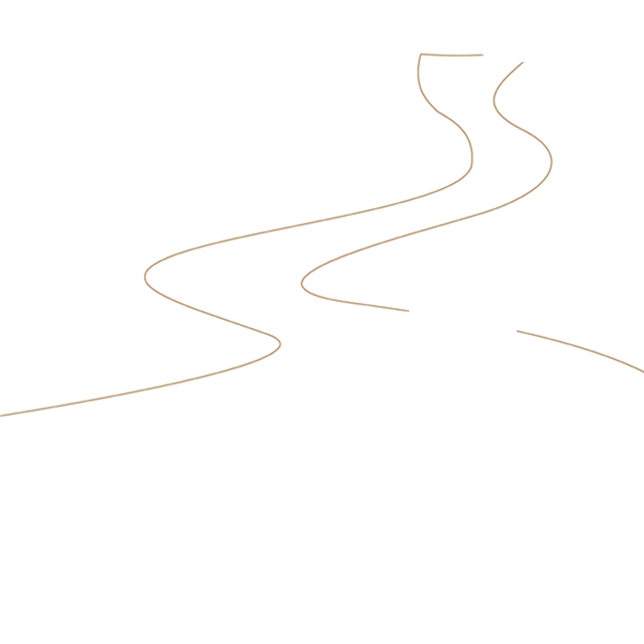
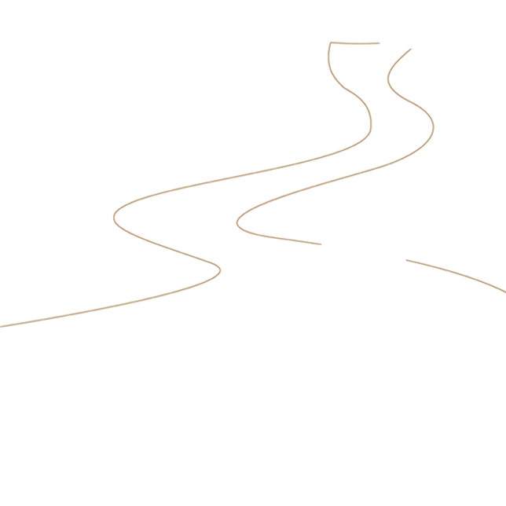

视频教程
 

基本规则
围棋是两个人的对决，一方持黑子，
一方持白子。各自轮流持子下棋在棋盘上。
黑方优先。如果两方的下围棋能力差异较大，
则较弱的一方使用黑子并允许先下两个或者更
多的棋子在棋盘上来弥补差异。官方棋盘网格是
19x19行，13x13和9x9是教初学者或玩快速游戏
的流行选择。一旦棋子下定后，
不再像其他点移动。


气
白下 A 位提掉黑子。
一个空缺的点被叫做这个棋子的“气”，这一链的棋子至少要有一个“气”存在于棋盘上。棋子如失去所有的气，就不能在棋盘上存在。


KO 规则
玩家不允许做出 让游戏回到原来位置的举动，这条规则称为ko规则，可防止无休止的重复。
如图所示：黑方刚刚下过的地方被标记为“1”，在标有红色圆圈的位置吃掉一枚白棋。则轮到白棋，若白子再下在红色圆圈的位置吃掉被标记“1”的黑棋子，则会导致双方无休止的重复游戏。相反，白子需要找到另外一个地方进行游戏，黑子可以通过再标记的交叉点填充起来结束。

KO规则应用的一个例子
工具
棋子：棋子分黑白两色。多为扁圆形（也有双面突起的应氏棋子）。棋子的数量以黑白子各180个为宜。棋子呈圆形。中国一般使用一面平、一面凸的棋子，日本则常用两面凸的棋子。较为珍贵的棋子材料有玛瑙、贝壳等。

棋谱：它为记录棋局的工具，通常以笔记本的形式出现。
棋钟：也叫计时器，在正式的比赛中可以使用计时器对选手的时间进行限制。非正式的对局中一般不使用计时器。

棋盘：盘面有纵横各十九条等距离、垂直交叉的平行线，共构成361个交叉点。盘面上标有九个小圆点，称为星位，中央的星位又称“天元”。启蒙学习中，有13×13、9×9的棋盘。另外，现代出土文物中还有一些是较罕见的15×15、17×17路棋盘。